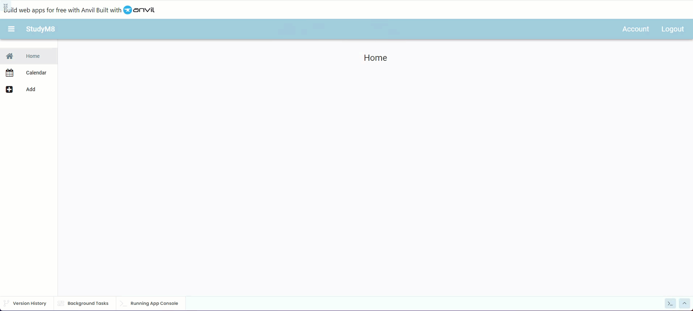

AccountComponent Code¶
Planning¶
Now that we have the AccountComponent layout completed we need to write the code that:
Retrieves and displays the user’s details
Connects the Edit Details button to the SetDetailsComponent
We know that we can use anvil.users.get_user() to retrieve user details and we also know that we can access these details like a dictionary.
We also have create the code to load the SetDetailsComponent, so we just need to copy that.
Code¶
Display users details¶
To display the current user’s details:
Open the AccountComponent in code mode
We want to load the first and last name before the form opens, so go to the
__init__method.Add the highlighted code below
11 def __init__(self, **properties):
12 # Set Form properties and Data Bindings.
13 self.init_components(**properties)
14
15 # Any code you write here will run before the form opens.
16 user = anvil.users.get_user()
17 self.label_first_name.text = user["first_name"]
18 self.label_last_name.text = user["last_name"]
This should occur every time that the AccountComponent is loaded.
Test user details display¶
Let’s test this first stage. Launch your website.
Login if you have to
Click on the Account link
Check that the names have been populated

Link Edit Details Button¶
Now to link the Edit Details button.
Create handler¶
To do this we will need to:
Change into Layout mode to
Create a handler for the button_edit_click event by clicking on click event

Copy code from MainForm¶
The link_register_click hander in the MainForm has the code to load the the SetDetailsComponent. Therefore:
Open MainForm in code mode
Go to the link_register_click event handler
Copy the highlighted code below
68 def link_register_click(self, **event_args):
69 anvil.users.signup_with_form(allow_cancel=True)
70 self.content_panel.clear()
71 self.content_panel.add_component(SetDetailsComponent())
72 self.label_title.text = self.breadcrumb_stem + " - Details"
73 self.set_active_link("details")
Fix reference to self¶
Remember in the SetDetailsComponent, we used get_open_form to reference the MainForm? We had to change all the self references so they reference the MainForm.
We need to do that again.
First, add the highlighted code below.
20 def button_edit_click(self, **event_args):
21 main_form = get_open_form()
22 self.content_panel.clear()
23 self.content_panel.add_component(SetDetailsComponent())
24 self.label_title.text = self.breadcrumb_stem + " - Account - Details"
25 self.set_active_link("details")
Then, in the highlighted code, replace every self with main_form (hint: there are six of them.)
20 def button_edit_click(self, **event_args):
21 main_form = get_open_form()
22 main_form.content_panel.clear()
23 main_form.content_panel.add_component(SetDetailsComponent())
24 main_form.label_title.text = main_form.breadcrumb_stem + " - Account - Details"
25 main_form.set_active_link("details")
Notice that there is a brown squiggly line under SetDetailsComponent(). This is telling you that the AccountComponent can’t find the SetDetailsComponents. To fix this we need to use the code below to import SetDetailsComponents (remember, check the line numbers).
1from ._anvil_designer import AccountComponentTemplate
2from anvil import *
3import anvil.server
4import anvil.tables as tables
5import anvil.tables.query as q
6from anvil.tables import app_tables
7import anvil.users
8from ..SetDetailsComponent import SetDetailsComponent
Solving our circular reference¶
What is a circular reference¶
Our circular refence is caused by our imports.
The SetDetailsComponent import statements are as below:
1from ._anvil_designer import SetDetailsComponentTemplate
2from anvil import *
3import anvil.server
4import anvil.tables as tables
5import anvil.tables.query as q
6from anvil.tables import app_tables
7import anvil.users
8from ..AccountComponent import AccountComponent
While our AccountComponent import statements are like this:
1from ._anvil_designer import AccountComponentTemplate
2from anvil import *
3import anvil.server
4import anvil.tables as tables
5import anvil.tables.query as q
6from anvil.tables import app_tables
7import anvil.users
8from ..SetDetailsComponent import SetDetailsComponent
If you look at the highlighted lines your will notice that:
the AccountsComponent imports the SetDetailsComponent
the SetDetailsComponent imports the AccountsComponent
So when you website launches and it reads all the code, the AccountsComponent wants to load all the code from the SetDetailsComponent which wants to load all the code from the AccountsComponent which wants to load all the code from the SetDetailsComponent which wants to load all the code from the AccountsComponent which wants to load all the code from the SetDetailsComponent which wants to load all the code from the… you get the idea.
Two items of code are referring to each other, hence the term circular reference.
Why did it occur¶
This circular reference was caused because we have been very messy with out code, in particular our navigating code. You might have already noticed that we haven’t been too stringent in applying the DRY principle, for example:
we have navigation code in the MainForm, the SetDetailsComponent and the AccountComponent
we also have repetition of similar code in each of the link click handlers in the MainCode
How to resolve it¶
We need to refactor our code and bring all the navigation code into one place. This we will do in the next tutorial.
Refactoring code
Refactoring code means improving the structure and readability of your code without changing what it does. It’s like cleaning up your room: you reorganize everything to make it easier to find and use, but you don’t throw anything away or change how your room works.
By refactoring, you make your code clearer, easier to understand, and simpler to maintain, which helps you and others work with it more effectively in the future.